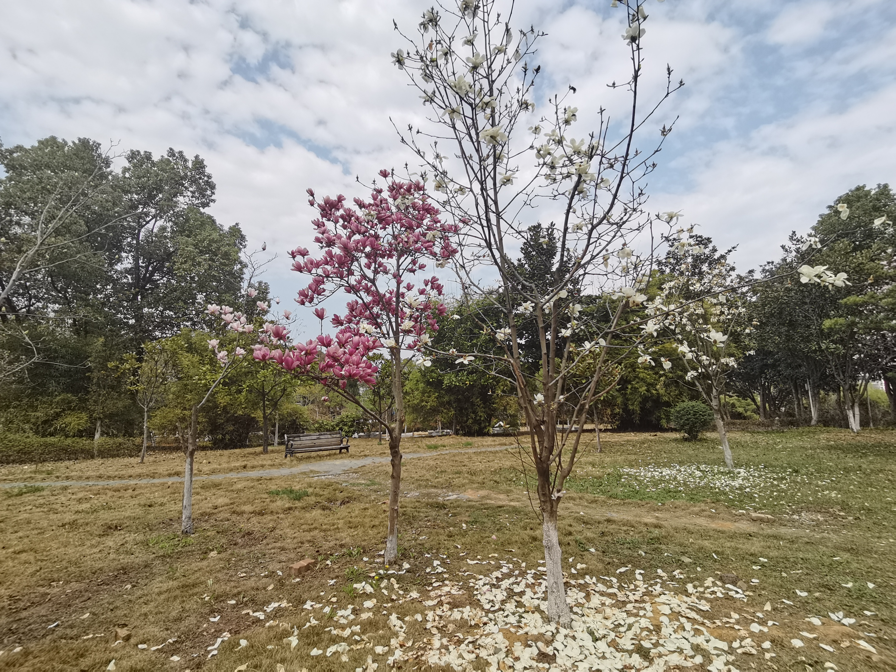
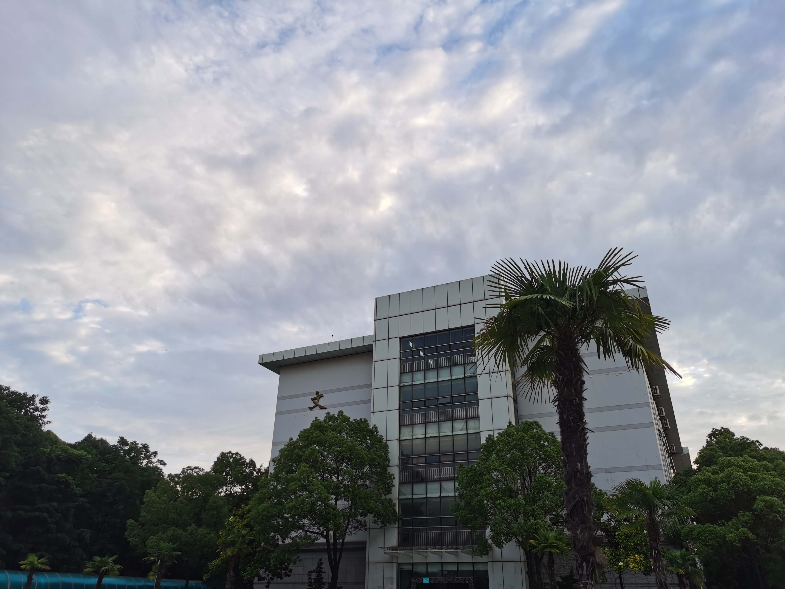
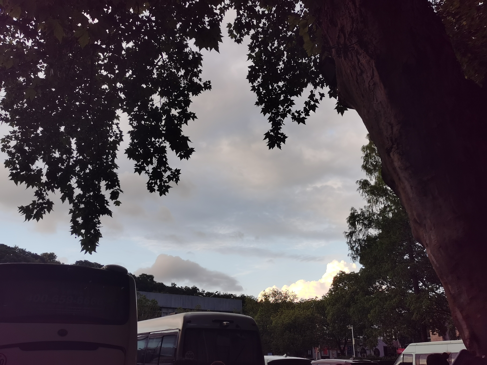
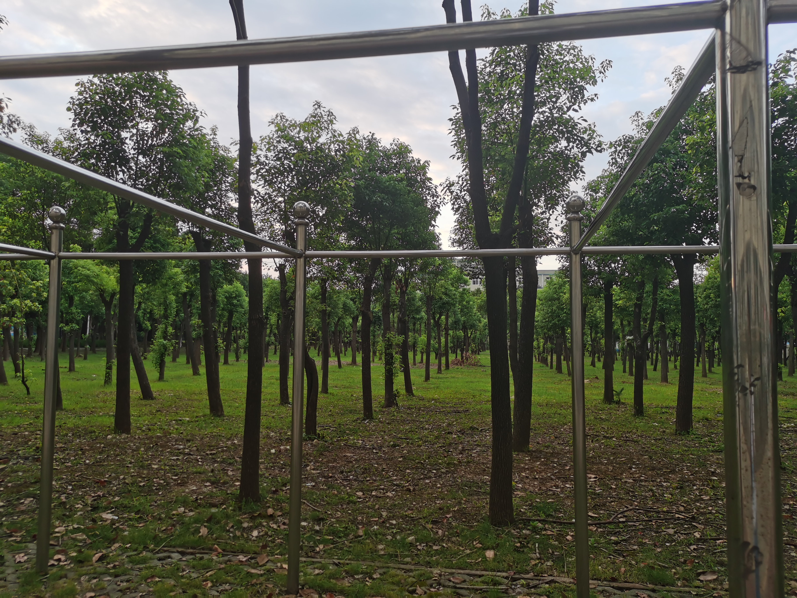

欢迎来到JUJUの世界
首页
校园美食记
随笔小记
联系我们

花开得很美，渐渐落下了又有何妨，我只知道，它现在开得很灿烂，等到来年，它仍会继续开放，我也还能再见它
2022-03-12 13:31
文泰楼的风景可好了，蓝蓝的天白白的云，等到黄昏，红色的余晖洒向每一扇窗户
2022-05-29 18:48


这是一片首义的天空。许久未去首义了，再去已是师姐，需要带着小孩们了，下次，下次，可能也没有机会再去了吧
2022-06-03 18:44
临湖的一块小树林，晾衣杆拦住了我望向远方的视线...好吧，亲爱的JUJU不为自己的路痴找借口（临湖迷路ed）
2022-06-22 18:59
